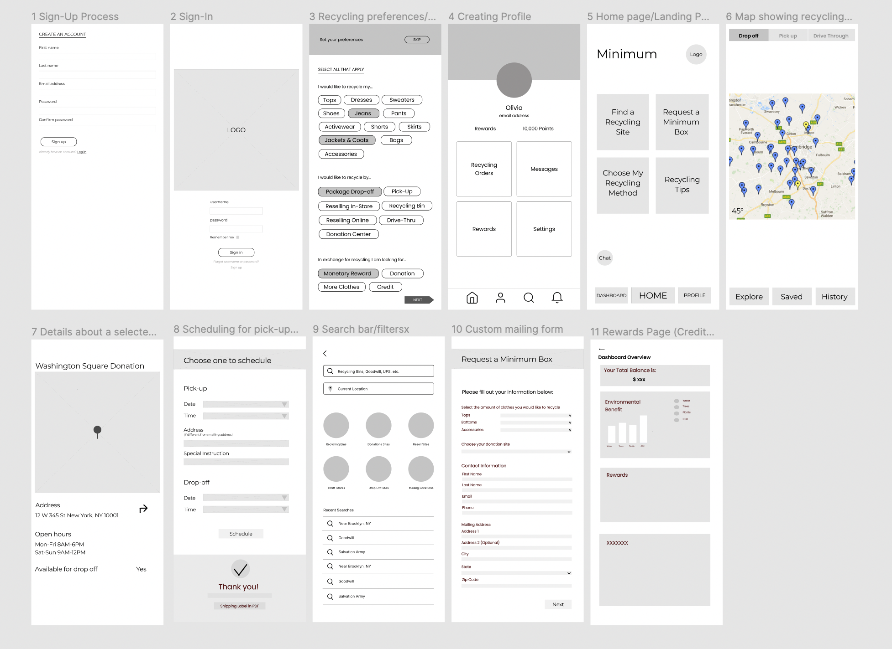
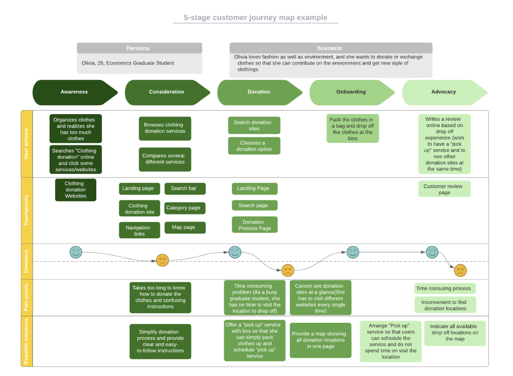
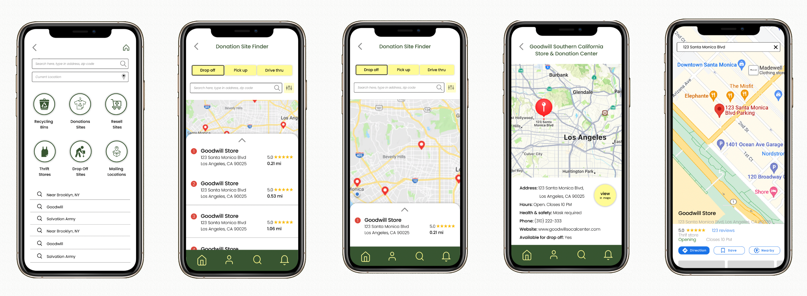

Clothing Recycling Platform
Lo-fi Prototype Screen Overview

For our lo-fi prototypes, we focused on compiling most of the essential screens that would be important in characterizing the purpose of our application. Rather than focusing on the visual language at this stage, we wanted to first consider the user flow and how a user would go about the process of setting up an account with our application. Another example would be to see the rewards they have accumulated within the application via a dashboard. One of the most important design elements that we have considered at this stage is clarity of information. Going forward with the design process, we will start to develop as well as implement a unified visual language such as color palette, visual themes, typography, and hierarchy across our application.
For the specific features beyond the basic elements, we incorporated insights from initial user research (survey and interview results). In particular, the profile design allows users to select their recycling preferences in terms of methods as well as habits. Given that previous findings suggested different individuals might recycle for different reasons (i.e., simply get rid of clothes, eliminate clothes for monetary gains), we included options like donating and reselling. To align with users’ motivations, the application encompasses a rewards system reflecting the impacts of their recycled clothes. Initial user research also revealed that users value convenience in the recycling process. Especially taking into account the persona Olivia who lives in an urban area, recycles regularly, and prefers convenience, we focused on offering a wide variety of methods (i.e., pick-up, drop-off, custom mailing box) to make the recycling experience versatile and efficient.
The two main sets of screens were based on the Location Finder feature and the Minimum Box feature. The former would encompass functions similar to any navigation maps but unique in a way by offering additional locations for recycling. Beyond a particular donation site or center, this Location Finder would also show any possible recycling points on the map. Users would be able to filter by the places they are interested in dropping off their clothes to, including recycling bins, donation sites, thrift stores, and mailing locations. The Minimum Box is a feature that customizes the size of a mailing box according to the user’s desired amount of clothes they are thinking about recycling. Along with the personalized box, they would receive a shipping label for the package. After packing their clothes, they have the option to request a delivery staff to pick up the box or they can drop off the box anytime at any mailing location on their own. Users would complete a form about their choice of the box, their basic information, and the time they would like to schedule the pick-up service. In the profile screen, users can also manage their Minimum Box order (i.e., see upcoming order, rescheduling, canceling). Aligned with previous user research, these features would serve to make the recycling experience more convenient.

Hi-fi Screens for Location Finder Feature

For our hi-fi prototypes, we focused on making the user experience of our app more intuitive and clear to use. Based on user feedback, we provided options that were missing or did not make sense in our lo-fi prototypes. We added specific features such as instruction slides prior to the Minimum Box order forms, as well as making the map feature more convenient by combining the map view with a pull-up list view. Taking notes from our user testing sessions, we decided to unify and revise the visual elements such as buttons and navigation options in order for the user to quickly pick up the visual signifiers of our app so that they can use it in the most natural way possible. We added hierarchy to the screens by including shadows to actionable elements and created a grid layout for the page to ensure consistency throughout the user experience.
“Aha” Moments
ML: Learning about the misconceptions users had during usability testing sessions was intriguing in that I got to observe the initial perception and interactions I didn’t think of while building the lo-fi prototypes. Overall, it also delighted me to see how creative problem-solving took place in our diverse team where members contributed their unique experiences and ideas.
CL: During the whole process, I was surprised by how everything is connected to each other. For instance, when we collect data from interviews, surveys, analysis, or etc., information we gather from them goes to the persona and that forms the fundamental part of the project. Especially, Persona is made based on the interview, survey, and other research data. I thought Persona could be based on our assumptions.
KY: During the usability testing we were able to test out our designs with users who had never encountered our platform as a product and I was intrigued by their responses to the prototype that we had developed at that point and how much insight they had to offer in terms of what kind of user experience they wanted.
MH:
LS: I have had a fair share of my a-ha moments in this class. One instance I remember in particular was through conducting an interview during the user research stage in addition to sending out surveys. I really enjoyed the process of learning more about users and relating back to our product through this experience. In addition, documenting the findings and writing down scripts also required more attention to detail and effort than I anticipated. It also highlighted the importance of recording the interview process.
Things that Worked Well
ML: I think having weekly team meetings worked well in terms of keeping everyone in the loop and synced. Setting short-term milestone deadlines has made the process less stressful. It was also very helpful to reference the class materials to apply to each stage of the design process. In times when we struggle, I liked how we would take a step back to review the prompt and goal at hand to stay on the right track. To make sure we cover for each other, I enjoyed how we would double check each other’s individual work to ensure clarity and quality of the deliverables as a whole.
CL: Creating an agenda and holding weekly team meetings definitely helped us keep track of the tasks we had to do. If those were not well organized, we would not be able to complete the tasks. Also, reading relevant articles and examples before each task was certainly helpful and I would repeat it in the future UX Design Project or others.
KY: Having a larger group for this project meant that we were able to split up the work and also pull from each other’s resources, especially when it came to interviews and user testing. It was helpful to see each other’s work and build on our concept and ideas based on our contributions.
MH:
LS: I was able to use what was learned in class and reading materials and apply to real life project I had been working on, in this case, the user research and ux design sections of clothing donation and recycling app named minimum
Areas of Improvement
ML: I wish there would be more time to test out our app features with more participants. It would also be great if we could leverage more of our own strengths to not only contribute to the final product but also help improve each other’s skills.
CL: If there is more time, I would want to conduct more interviews and surveys for more accurate data. Also, I would love to improve the user interface with more detailed, well organized, and user-friendly features.
KY: Given more time, I would definitely want to spend more time developing our hi-fi prototypes and improve the user interface according to our testing and research. Also, it would be great if we could test our concept and prototype with a larger group of people for more diverse feedback.
MH:
LS: Through this class, particularly working on the ux design of the app minimum, really taught me the importance of iteration. That being said, the iterating part is critical and I would like to spend more time developing hi-fi prototypes and conducting more usability testing.